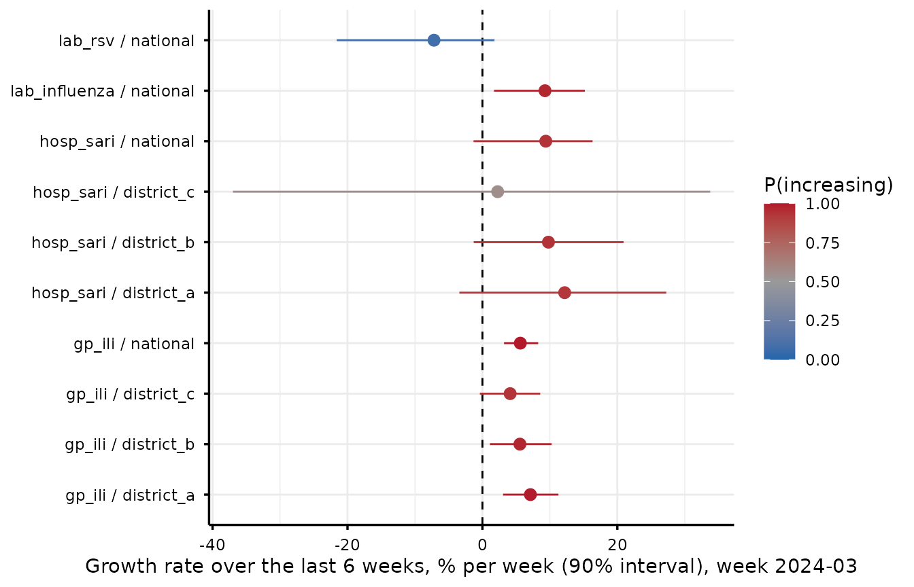

Article 3: one pipeline over every registry
Richard Aubrey White
Source:vignettes/articles/case-study-pipeline.Rmd
case-study-pipeline.RmdThe pipeline uses the two other layers. It loads the table of every registry package of article 1. It then runs the methods of article 2 on every indicator in every location, one plnr analysis for each.
Data: one plnr data source for each registry
This article first runs the code of article 1 that makes the
synthetic registries, their tables and check_contract(). It
does not print that code again.
library(csalert)
library(plnr)
p <- Plan$new()
p$add_data("gp", fn = function() check_contract(get_data_gp(), "gp"))
p$add_data("hosp", fn = function() check_contract(get_data_hosp(), "hosp"))
p$add_data("lab", fn = function() check_contract(get_data_lab(), "lab"))A registry that breaks the contract stops the run before any analysis
starts. A new registry needs one more add_data() call.
Argsets: read from the data
The pipeline reads the indicators and the locations from the data. It also reads two facts that decide the method. The first is whether the indicator has a denominator. The second is whether any count arrives after the Monday of its reference week.
d <- p$get_data()
argsets <- rbindlist(lapply(setdiff(names(d), "hash"), function(src) {
d[[src]][, .(
source = src,
has_denominator = !anyNA(denominator),
arrives_late = any(reporting_date > monday_of(isoyearweek_reference))
), keyby = .(indicator_tag, location_code)]
}))
argsets[, name := paste(indicator_tag, location_code, sep = "/")]
p$add_argset_from_df(argsets)
argsets[, .N, keyby = .(source, has_denominator, arrives_late)]
#> Key: <source, has_denominator, arrives_late>
#> source has_denominator arrives_late N
#> <char> <lgcl> <lgcl> <int>
#> 1: gp TRUE FALSE 4
#> 2: hosp FALSE TRUE 4
#> 3: lab TRUE TRUE 2p$get_data() also returns an element hash,
which the code above skips. A new indicator or location in a registry
needs no change to the code.
One action function
The action function runs the csalert methods of article 2 on one indicator in one location. The two facts in the argset decide which nowcast and which measure it uses. It returns the growth rate of the newest week. Article 2 also adds the intensity levels, which this function leaves out.
trend_fn <- function(data, argset) {
x <- data[[argset$source]][indicator_tag == argset$indicator_tag & location_code == argset$location_code]
tri <- csfmt_reporting_triangle_v3(x, id_cols = c("indicator_tag", "location_code", "age", "sex"))
denominator <- if (argset$has_denominator) "denominator"
ens <- if (argset$arrives_late) {
nowcast_delay_ecdf_v1(tri, max_delay_days = 28, n_sim = 500, denominator_col = denominator)
} else {
nowcast_passthrough_to_ensemble_v1(tri, max_delay_days = 28, denominator_col = denominator)
}
measure <- "numerator_nowcasted"
if (argset$has_denominator) {
ens <- ens_add_rate(ens, numerator = measure, denominator = "denominator_nowcasted", per = 100)
measure <- csfmt_var(measure, denom = "denominator_nowcasted", per = 100)
}
ens <- short_term_trend(ens, measure = measure, trend_isoyearweeks = 6, denominator = if (argset$has_denominator) "denominator_nowcasted", per = 100)
res <- ens_collapse(ens, probs = c(0.05, 0.5, 0.95))
gr <- csfmt_var(measure, role = "trend", suffix = "_gr")
res[.N, .(
indicator_tag, location_code, isoyearweek,
growth_pct = get(csfmt_var(gr, q = 0.5)),
growth_pct_p05 = get(csfmt_var(gr, q = 0.05)),
growth_pct_p95 = get(csfmt_var(gr, q = 0.95)),
p_increasing = get(csfmt_var(measure, role = "trend", suffix = "_increasing_pr"))
)]
}
p$apply_action_fn_to_all_argsets(fn = trend_fn)
set.seed(2)
res <- rbindlist(p$run_all())
res
#> indicator_tag location_code isoyearweek growth_pct growth_pct_p05
#> <char> <char> <char> <num> <num>
#> 1: gp_ili district_a 2024-03 7.115856 3.0661256
#> 2: gp_ili district_b 2024-03 5.559025 1.1145332
#> 3: gp_ili district_c 2024-03 4.109583 -0.3784135
#> 4: gp_ili national 2024-03 5.620841 3.2024720
#> 5: hosp_sari district_a 2024-03 12.192209 -3.4173068
#> 6: hosp_sari district_b 2024-03 9.786429 -1.2880501
#> 7: hosp_sari district_c 2024-03 2.259962 -36.9866325
#> 8: hosp_sari national 2024-03 9.394064 -1.3142596
#> 9: lab_influenza national 2024-03 9.275147 1.7179264
#> 10: lab_rsv national 2024-03 -7.180523 -21.5983251
#> growth_pct_p95 p_increasing
#> <num> <num>
#> 1: 11.268934 0.992
#> 2: 10.251953 0.973
#> 3: 8.571016 0.934
#> 4: 8.266010 0.997
#> 5: 27.252624 0.928
#> 6: 20.922620 0.938
#> 7: 33.770764 0.556
#> 8: 16.326881 0.938
#> 9: 15.184068 0.968
#> 10: 1.786009 0.080run_all() loads each registry once and runs the 10
analyses. run_all_parallel() runs the same analyses in
parallel.
The function builds the names of the estimate columns with
csfmt_var() from the measure. The same lines therefore read
a rate and a count.
One table and one figure for every registry
The result has one row for each analysis, with the same columns for all three registries. One figure therefore shows them all:
library(ggplot2)
pd <- copy(res)
pd[, analysis := factor(paste(indicator_tag, location_code, sep = " / "))]
q <- ggplot(pd, aes(y = analysis, x = growth_pct, xmin = growth_pct_p05, xmax = growth_pct_p95, colour = p_increasing))
q <- q + geom_vline(xintercept = 0, linetype = "dashed")
q <- q + geom_pointrange()
q <- q + scale_colour_gradient2("P(increasing)", low = "#2166ac", mid = "grey60", high = "#b2182b", midpoint = 0.5, limits = c(0, 1))
q <- q + labs(x = sprintf("Growth rate over the last 6 weeks, %% per week (90%% interval), week %s", pd$isoyearweek[1]), y = NULL)
q <- q + theme_minimal(base_size = 11)
q <- q + theme(axis.line = element_line(colour = "black", linewidth = 0.6), axis.ticks = element_line(colour = "black", linewidth = 0.6), axis.text = element_text(colour = "black"))
q
The same structure in production
The Norwegian Institute of Public Health/Folkehelseinstituttet (NIPH/FHI) runs the trend analysis of its respiratory surveillance with a version of this structure, as the overview describes. Each registry has a function that returns a table that follows the contract. Four plnr plans then run in sequence:
- Quality control. One analysis checks every registry and removes known bad records.
- Trends. One analysis for each indicator, as in this article, with csalert.
- Tables. One analysis makes the tables of the weekly report.
- Figures. One analysis writes the figures as image files.
A Quarto document then renders the weekly report from the saved tables.